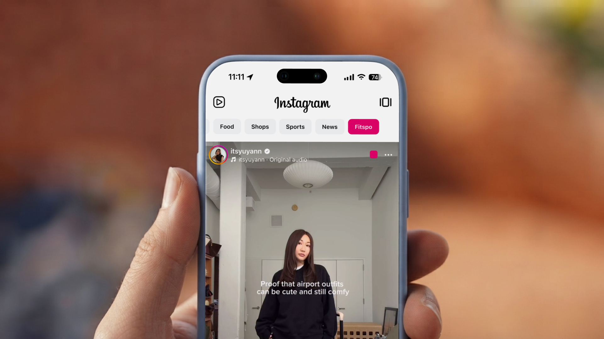

Instagram Lists lets users organize their feeds by social context, while recommendations adapt to the context they choose. An independent feature concept.
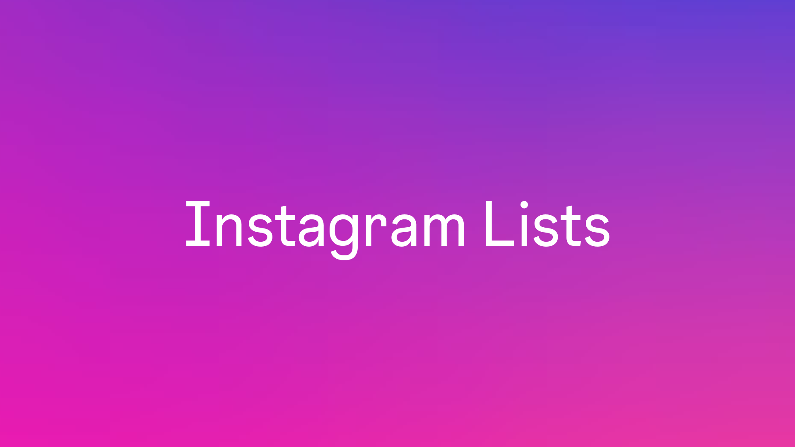
Problem
Everyone you follow competes in one feed.
Missing what matters
A single feed forces different relationships to compete for attention.
Lost after seeing
The feed optimizes for consuming content but not for rediscovering the accounts behind it.
Opportunity
How might we give users control over what their feed prioritizes in each moment without sacrificing discovery?
Solution
Introducing Instagram Lists
Organize the people you follow into lists that reflect your different circles. Then browse Home, Stories, and Following within the context that matters in the moment.
Core flows
Lists live inside browsing, not beside it.
Defaults
Users start with Default Lists.
Home brings Feed, Stories, and Reels into one swipeable structure, with familiar default lists of All, Following, and Close Friends with no setup required.
New Home Navigation
Default in Following
Extend
Users can then extend this system into their own relationships.
Create custom lists around friends, school, creators, shops, or any other circle, then switch between them across Feed, Stories, and your Following.
User Lists in Home
User Lists in Following
Create
Creation happens where intent emerges.
Create a list wherever the need arises on Home and/or your Following, customizing its name, color, and accounts in one flow.
Create New List
New List in Home
Edit
Editing happens where intent already exists.
Add or remove accounts while browsing, keeping lists up to date without interrupting the experience.
Edit List from Post
Edit List from Story
Edit List from Profile
Edit List from Following
Edit List directly
Research
Algorithms can predict relevance, not intent.
Platform audits & competitive analysis
Instagram has discovery and friends, but no way to choose between them.
I audited Instagram, Facebook, TikTok, and Snapchat. Instagram covers algorithmic discovery and friend-first interaction, but viewing modes are limited and there’s no intentional content filtering. Intentional viewing was the open space.
Instagram audit
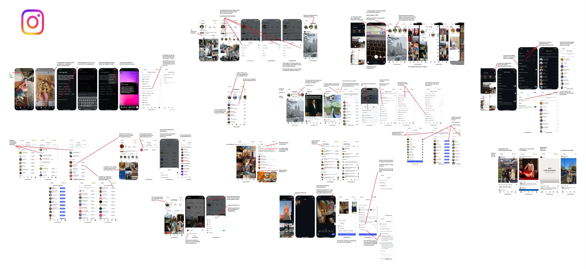
Competitive analysis
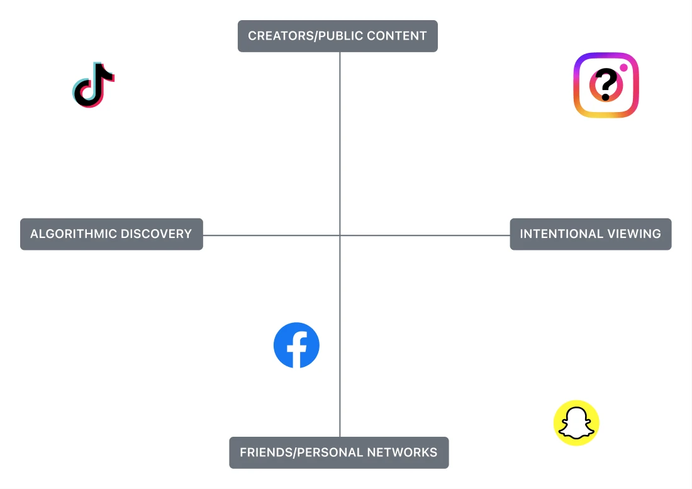
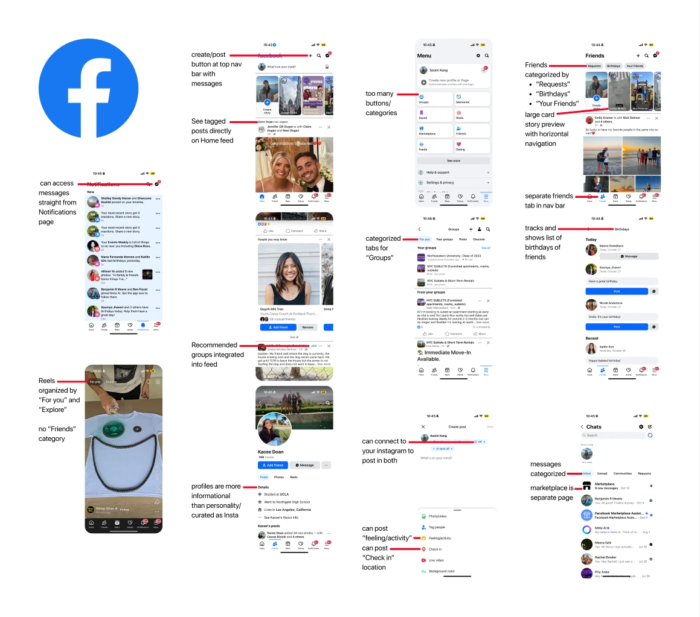
Snapchat
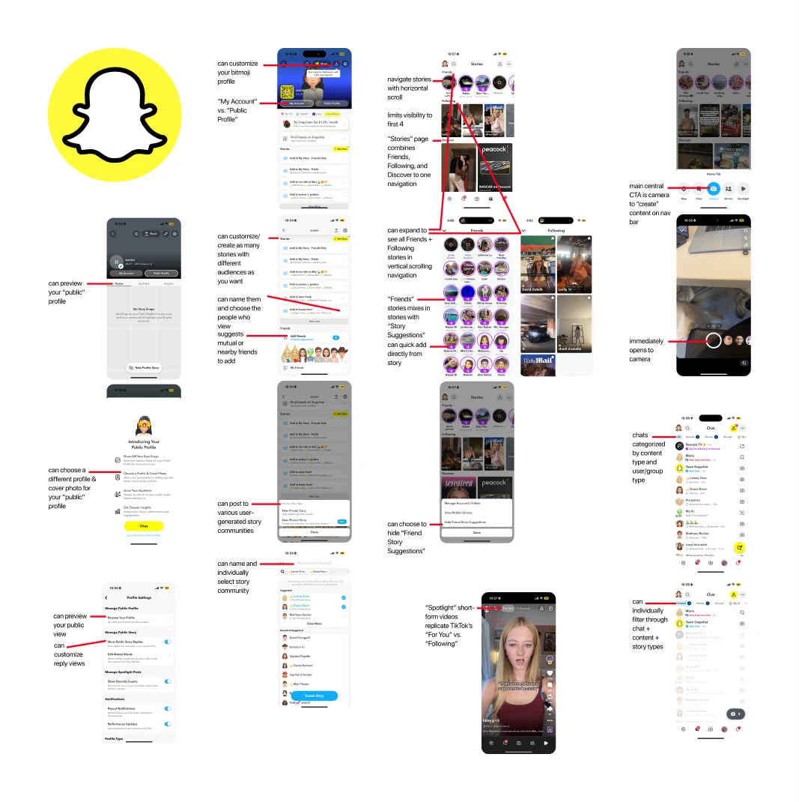
TikTok
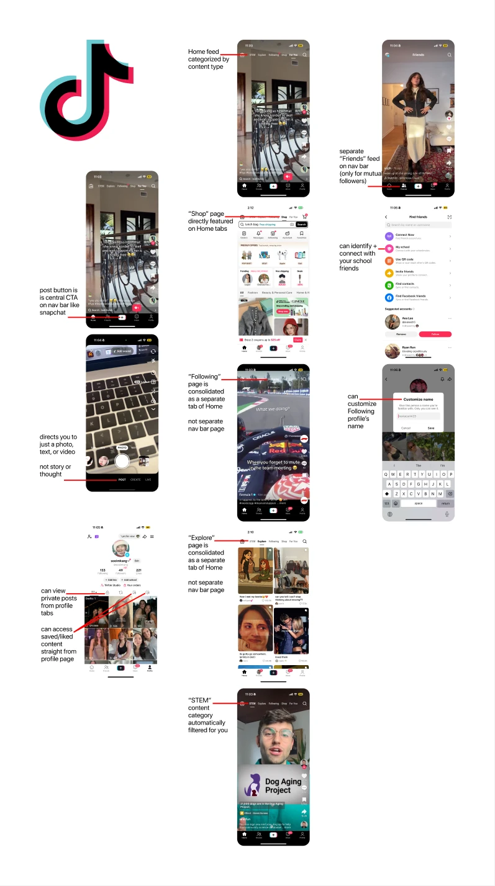
Feature mapping
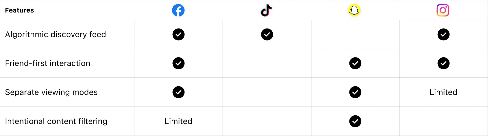
User interviews & affinity mapping
People mentally group who they follow, but Instagram puts everyone in one feed.
Think-aloud sessions with five active Instagram users revealed prolonged passive scrolling and distinct mental categories for friends, school, creators, and brands.
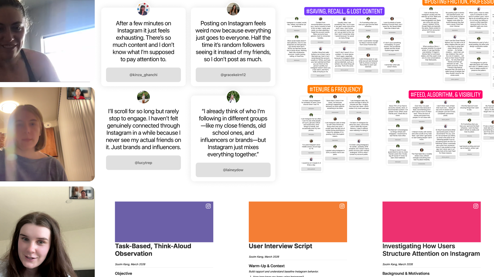
Explorations
Three directions, tested with 10 people. Only one fixed the root problem.
I tested three directions: easier access to feed controls, control over how you appear to others, and organizing who you follow into contexts. Only the third directly affected feed content.
Hypothesis
Easier access to feed controls reduces attention friction.
What worked
Controls got easier to find.
What didn’t
People still couldn’t choose which relationships came first.
Hypothesis
Controlling who sees what would improve self-presentation and engagement.
What worked
Profile curation improved.
What didn’t
It fixed how people present themselves, not how they organize their attention.
Hypothesis
Grouping followed accounts by context gives people intentional control of their feed.
What worked
Matches how people already group who they follow. Lets people browse by context. Scales from friends to creators to shops.
System thinking
Users define the context. The algorithm ranks within it.
Lists don’t replace Instagram’s ranking. They focus it: people choose which social context matters right now, and Instagram decides what’s relevant inside it.
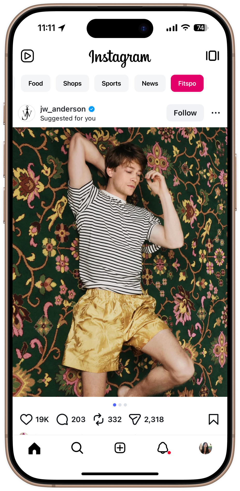
Before Lists
One feed mixed everything together.
Friends, creators, ads, and suggested posts are all mixed into the same feed. Each scroll jumps between unrelated content, making the experience feel fragmented and harder to land on content people actually care about.
After Lists
Every list is its own context.
The accounts people group together give Instagram context for what each list is about. That context shapes the recommendations, suggested posts, and ads within it, so each feed stays relevant to what someone chose to browse.
System mapping
Designed as a system,
not just a feature
I prioritized with MoSCoW, mapped every surface Lists touches, and traced the journeys to create, filter, and edit a list, so one choice holds across Home, Stories, profiles, and Following.
System map
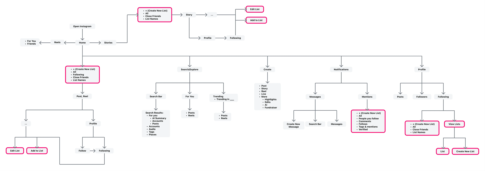
MoSCoW priorities
Must13
- Name new list from Create List
- Assign new list color from Create List
- Assign following to existing list inside existing list
- Assign following to new list from Create New List
- Create new list from Lists
- Edit existing list from Lists (color, name, following)
- Filter main Home feed by list
- Filter Stories by existing list
- Add/
remove following from existing list - Automatically create “Close Friends” list
- Show assigned list on following profile
- Filter Following by existing lists in Following
- Filter Home/
Stories/ Following feeds by multiple lists
Should2
- Add following to multiple lists
- Remove user from existing assigned list from Home feed post
Could3
- Remove user from existing assigned list from Stories post
- Suggest recommended lists based on following account categories
- Auto-generate a collection of users from the first few inputs
Would3
- Save posts to new/
existing lists - Filter saved posts by existing list
- Organize all following for you with AI-generated lists
User journeys
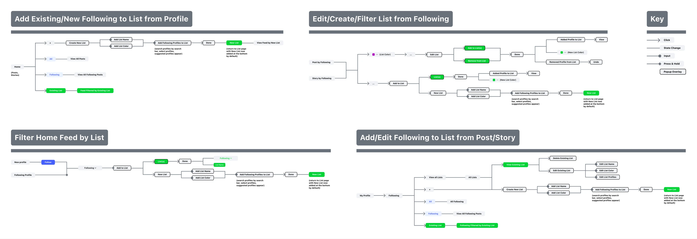
Potential impact
If validated, Lists could help…
Users
Focus on what matters most in each moment.
Creators
Reach the right audiences.
Instagram
Drive high-intent engagement without losing discovery.
Design decisions
Native to Instagram, and private by default
System fit
No new visual language
I built from Instagram’s existing visual language, testing list markers across Stories, profiles, and menus to ensure Lists felt distinct without adding noise or interfering with the platform’s existing icons, badges, and status signals.
Existing
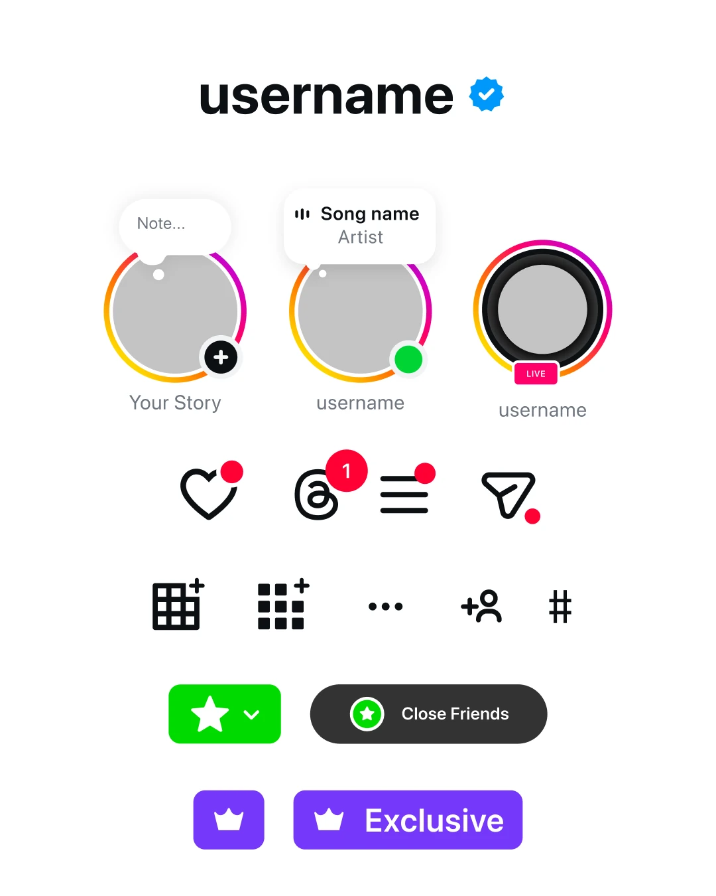
Tested
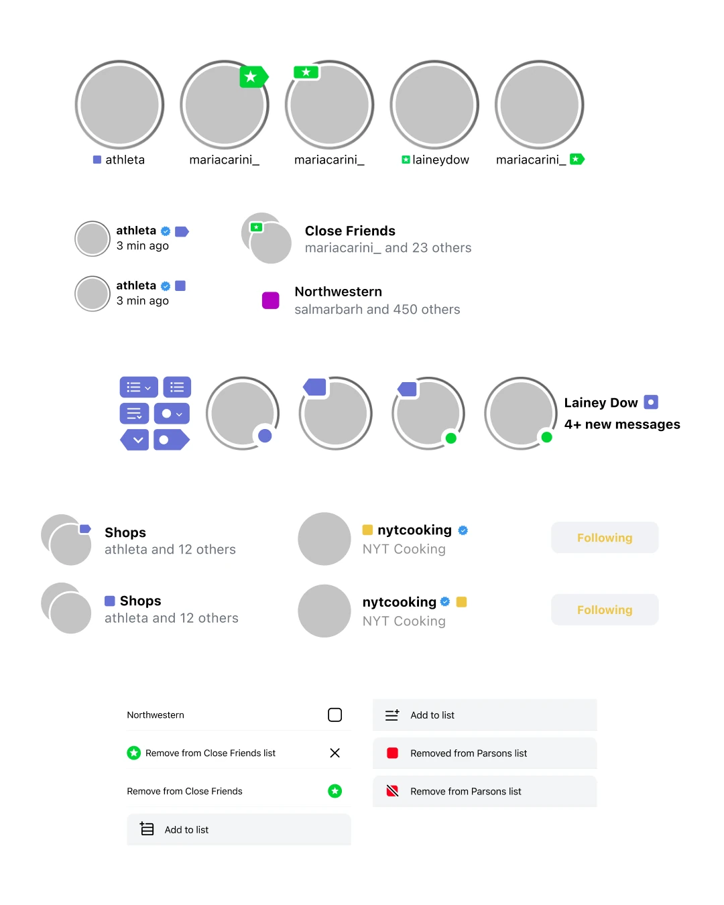
Final
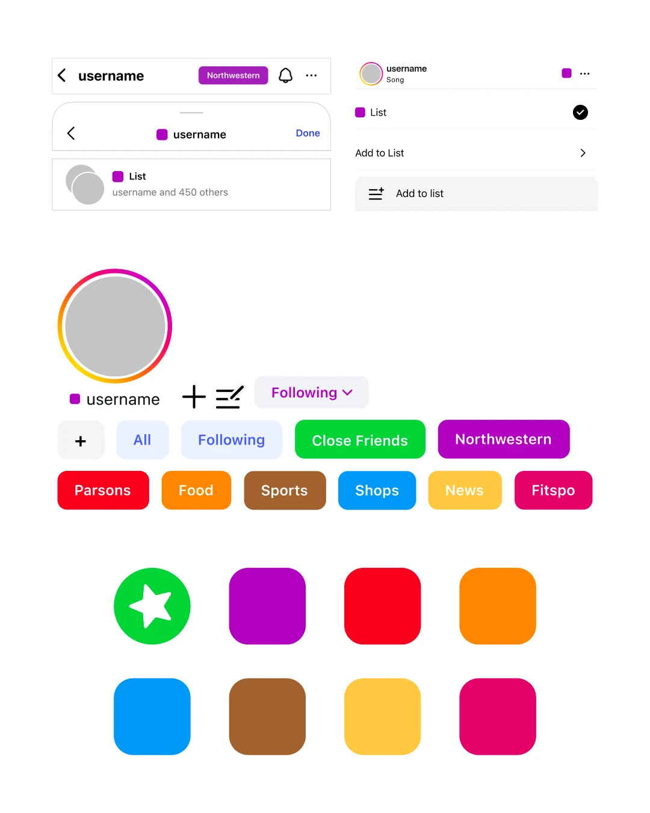
Privacy
Lists only change what you see.
Sorting people is personal, so a list is visible only to the person who made it. No one is notified when they’re added, lists never show on anyone’s profile, and the people on a list see nothing different.

Next steps
Two questions remain before Lists could scale.
Do people organize their relationships into overlapping circles?
Research confirmed that users mentally group accounts they follow, but not whether those groups overlap. I’d investigate their mental models before introducing multiple-list membership.
Could AI make organizing hundreds of accounts easier?
Manually sorting large networks could hinder adoption. I’d explore AI-assisted grouping based on relationships and interests, letting users refine suggested lists rather than start from scratch.
Outcome
A concept grounded in real product thinking.
I presented this case study to Ian Goode (Former Head of Design at Meta), Darren Chin (Senior AI Product Manager at BCG X), and my professors Sally Chung (Founder of Designpreneurs & Co.), Dana Jefferson (Staff Product Designer, AI Imaging at Adobe), and Lauren Schlanger (Talent Manager & Creative Recruiter at Google Creative Lab). I received positive feedback on both my presentation and concept.
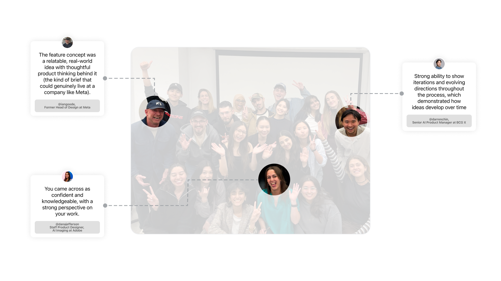
Reflection
People choose the context. The system works within it.

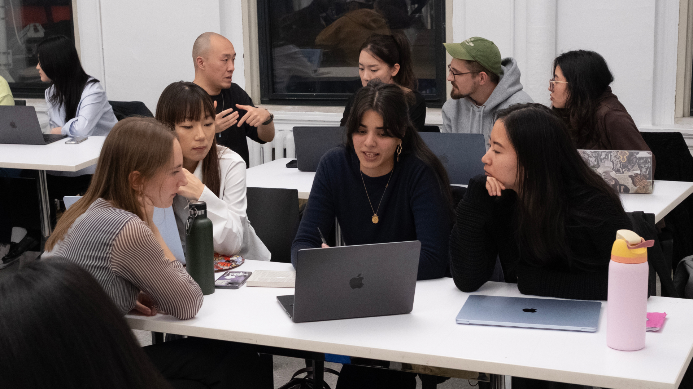
Takeaway 01 · User behavior
People already organize their relationships in their heads. Lists gives those existing circles a place in the product, so browsing can start with what matters in the moment.
Takeaway 02 · Designing with AI
Let people define the context, then let the recommendation system find what’s relevant within it. User choice can guide discovery without replacing it.